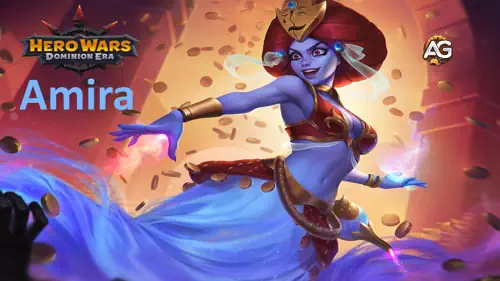
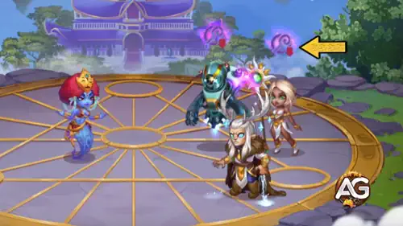
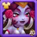
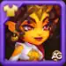
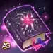

Enter the shifting sands of the Dominion where illusion reigns and truths blur. Amira, a mysterious genie, tests the spirit of every hero who dares seek her power. With mesmerizing mirages and mind games, she challenges not just your strategy but your will. Are you clever enough to turn her deceptive magic into your greatest weapon?
In this guide, we’ll uncover Amira’s core stats, best team roles, and tactical uses that will help you harness her unpredictable magic to dominate the battlefield. Let the desert winds guide you Amira is not just a support mage… she is the riddle itself.

Amira Guide - Hero Wars: Dominion Era, a game developed by Nexters.
Who Is Amira?
Amira is a mid-line Support Mage who manipulates illusions and desires to control the flow of battle. With high Magic Attack and piercing Magic Penetration, she disrupts enemy strategies while enhancing allies through clever trickery.
Class: Support / Mage
Position: Middle Line
Main Stat: Intelligence
Born of desert legends, Amira has grown weary of mortals who succumb to greed and jealousy. Now, she toys with those who seek her lamp, turning their wishes into curses if they are unworthy.
Her toolkit is designed for players who love tactical depth. Amira shines when paired with heroes that benefit from manipulation, debuffs, or layered spell effects. But beware her power requires precise synergy and timing.
Amira Pros and Cons – Hero Wars: Web and Facebook
✅ Pros
Effectively disables critical hits from Agility-based heroes like Ishmael and Yasmine, neutralizing their burst potential for several seconds.
Her first skill, Careless Wish, deals significant damage over time, especially punishing teams with sustained or low burst damage like Nebula, Sebastian, or Astaroth.
Synergizes well with magic-boosting allies such as Celeste, Iris, and Faceless, who can amplify her overall damage and control impact.
⌠Cons
Susceptible to high burst damage, especially from physical AoE heroes like Ginger or Keira, who can quickly disrupt her setup and punish her mid-line position.
Heroes with taunt abilities, like Ziri, can redirect her Careless Wish, absorbing the damage and reducing its effectiveness against more vulnerable targets.
Amira Skills Upgrade Priority - Hero Wars: Dominion Era
Learn which Amira skills to upgrade first and why turn illusions into deadly weapons with smart skill evolution choices!
Careless Wish
Amira casts a storm of cursed gold around all enemies. The more they attack, the weaker the storm becomes. After 7 seconds, it explodes and deals damage based on how strong it still is.
Evolution Priority:Very High – This is Amira’s main source of damage and pressure. It punishes enemies for attacking, making it crucial in both PvP and PvE. Upgrading this skill increases the hurricane strength and final damage, making her much more threatening.
Skill - Careless Wish, Hero Wars Dominion Era.
🔸 Note on Final Damage:
The damage dealt by Careless Wish depends on how much power remains in the storm after 7 seconds.
If the enemy doesn't attack much, the storm retains more power → higher damage.
If the enemy attacks frequently, the storm loses power quickly → lower damage.
Desperate Fury
Amira tricks Agility-based enemies by making them land no critical hits for 7 seconds, even though their critical hit chance gets increased.
Evolution Priority:High – Very effective against popular agility heroes like Lara Croft, Yasmine, and Artemis. The more you upgrade, the more enemies it can affect and the higher the fake critical boost ensuring their crits fail even harder.
Amira manipulates Intelligence-based enemies by increasing their healing and then reducing their Magic Attack. The debuff continues even after the effect ends.
Evolution Priority:Medium-High – Strong versus mages like Orion, Augustus, and Polaris. As the skill scales, the Magic Attack reduction becomes more significant, reducing the impact of enemy spellcasters. Worth upgrading if you face magic-heavy teams often.

Skill - Art of Deceit, Hero Wars Dominion Era.
Illusory Alliance
Amira tricks Strength-based enemies by forcing them to send all their buffs to a fake illusion ally that does nothing and disappears after 6 seconds.
Evolution Priority:Medium – This is a niche skill that can be useful against strong tanks or buffed warriors. However, the illusion doesn’t deal damage or control the fight, so the skill is more tactical than impactful. Upgrade only after the others are maxed.
Axel is the best choice for Amira because he boosts her Magic Attack and Armor, two essential stats for a mid-line support mage. His patronage skill protects her from burst damage, which is crucial since Amira doesn’t have self-sustain or defense skills. With Axel, she can stay alive longer to execute her illusions and debuffs, especially in fights against high-damage teams.
Biscuit works well with Amira by amplifying her anti-healing strategy, especially when using Art of Deceit. That skill boosts healing briefly before punishing mages, and Biscuit makes sure enemy healing is reduced even further. He also increases her Magic Attack and Armor, but lacks the survival shield that Axel provides.
Oliver gives Amira extra Health and Armor, and his healing can keep her alive in some battles. However, because Amira relies on offensive magic and timing, Oliver doesn’t boost her performance directly in terms of skill impact. He’s better suited when you face teams with sustained damage and no burst threats.
Best Skin for Amira – Hero Wars: Dominion Era
Find the best skin order for Amira in Hero Wars. Learn which upgrades boost her illusion magic most effectively in real battle scenarios.
Default Skin – Intelligence +1,365
The Default Skin increases Amira’s Intelligence, which boosts her Magic Attack, Magic Defense, and a bit of Physical Attack. It directly scales all her skills' damage and effectiveness.
Evolution Priority:High – Intelligence improves all of Amira’s skill effects. This is the most impactful and well-rounded skin to upgrade first for both offense and defense.
Cybernetic Skin – Magic Penetration +10,650
This skin increases Magic Penetration, allowing Amira to bypass enemy magic defense and deal stronger damage to high-resistance teams.
Evolution Priority:Very High – Essential for breaking through magic tanks and high-defense setups. It’s particularly strong in PvP when facing heroes like Aurora, Aidan, or other mages with magic defense boosts.

Romantic Skin – Magic Defense +10,650
This skin increases Magic Defense, helping Amira survive longer against enemy mages like Orion, Krista, and Lars.
Evolution Priority:Low – Useful if you’re often facing magic-heavy teams, but doesn’t boost her offensive potential. Consider this as a third or fourth option for PvP durability.
Demonic Skin – Magic Attack +10,650
The Demonic Skin increases Magic Attack, directly boosting the damage of all Amira’s skills, making her illusions much more dangerous.
Evolution Priority:Very High– A strong option if you want to maximize Amira’s offensive power, especially after the Default Skin. Great for increasing burst damage in both PvE and PvP.

Solar Skin – Armor +10,650
The Solar Skin increases Armor, protecting Amira from physical damage (like Dante or Ishmael), but she is a mid-line mage and usually not a primary target.
Evolution Priority:Medium-Low – Offers survivability, but less impactful for her skill effectiveness. Consider it mainly if you face strong physical DPS frequently.
Note: The Solar Skin can only be obtained during the Summer Festival event.
Amira Artifact Evolution Priority – Hero Wars: Dominion Era
Discover the best artifact priority for Amira in Hero Wars and learn which upgrades enhance her illusions and damage in real combat situations.
Weapon Artifact: Turban of the Grand Genie
This artifact activates when Amira casts her ultimate skill (Careless Wish) and grants a temporary Magic Attack bonus +50190 to the entire team for 9 seconds. This effect scales her damage and supports other magic-based allies at the same time.
Evolution Priority:Very High – Since it activates with her main skill and boosts overall team performance, this artifact should be the first to upgrade. It strengthens her ultimate and helps control the pace of battle.

Book Artifact: Manuscript of the Void
Grants Amira a strong boost to Magic Penetration +10 680 and a decent amount of Magic Attack +8364. This is essential to bypass enemy Magic Defense and make sure her skills (especially Careless Wish and Art of Deceit) land full impact even against tough enemies.
Evolution Priority:High – Improves damage consistency against magic-resistant enemies. It’s a solid second priority after the weapon for Amira’s offensive scaling.
Ring Artifact: Intelligence +6249
Boosts Amira’s Intelligence, which directly increases her Magic Attack, enhancing the power of all her skills. It also adds some Magic Defense and Physical Attack (though the latter is not significant for her role). While this artifact provides a valuable passive bonus, it does not offer the immediate, team-wide impact of her weapon or the penetration advantage of her book.
Evolution Priority:Medium – Useful for passive power increase, but doesn’t provide immediate or team-wide effects. Upgrade it after the weapon and book are well-developed.
Amira Glyph Evolution Priority
Discover the best glyphs for Amira in Hero Wars: Dominion Era. Learn which glyphs boost her illusion magic and battle impact most effectively.
1st Glyph – Magic Attack:
This glyph directly increases the power of all Amira’s skills, including Careless Wish, Art of Deceit, and Desperate Fury. Every ability she uses scales with Magic Attack.
Evolution Priority:Very High – Magic Attack is the core stat for Amira. Maxing this glyph will greatly enhance her damage output and control abilities.
2nd Glyph – Magic Penetration:
This glyph helps Amira bypass enemy Magic Defense. It’s especially useful against magic-resistant heroes like Aurora, Aidan, and Rufus, ensuring her spells land with full effect.
Evolution Priority:High – Improves reliability of her damage against high-resistance teams. Prioritize after Magic Attack for maximum spell effectiveness.
3rd Glyph – Intelligence:
Increases Amira’s Intelligence stat, which adds Magic Attack (+3 per point), Magic Defense, and a bit of Physical Attack. It supports both offense and minor survivability.
Evolution Priority:Medium-High – A strong scaling glyph that passively boosts all her core stats. Useful, but slower impact than direct Magic Attack or Penetration.
4th Glyph – Health:
This glyph increases Amira’s Health by a large amount, giving her more durability in long fights or when facing burst teams like Dante or Ishmael.
Evolution Priority:Medium – A defensive glyph that’s helpful in PvP, but doesn’t improve her offensive capabilities directly. Upgrade once her damage glyphs are maxed.
5th Glyph – Armor:
Increases Amira’s resistance to physical attacks. Useful against teams with strong physical DPS, but less impactful than magic-related glyphs.
Evolution Priority:Low – Defensive-only and situational. Leave this glyph for last unless facing physical-heavy teams constantly.
Cornelius
Cornelius is a direct counter to Amira due to his Heavy Wisdom skill, which targets the enemy with the highest Intelligence. Since Amira’s power scales from Intelligence, this ability deals massive magic damage and can eliminate her quickly in most battles.
Isaac
Isaac is one of the most effective magic counters in the game. His MP-300 Capacitor absorbs magic damage, powering up Tes'Lin, and when Isaac activates Tes'Lin’s Overdrive, it silences the entire enemy team including Amira preventing her from casting key skills like Careless Wish.
Keira counters Amira with Blade Whirlwind, a powerful area-of-effect skill that hits the backline and silences enemies for 4 seconds on its return path. The high burst damage can significantly weaken the storm from Amira’s Careless Wish by reducing its stored power before it activates. As a mid-line support mage, Amira is highly vulnerable to Keira’s aggressive pressure and silence effects.
Ziri can neutralize Amira’s first skill, Careless Wish, by redirecting it with Focus of Hatred. This taunt forces enemies to target Ziri, absorbing Amira’s magic and protecting squishier allies from burst damage while boosting Ziri’s defenses.
Amira Best War Flag Hero Wars
Discover the most effective War Flags to boost Amira’s magic-based support and control abilities in Hero Wars: Dominion Era.
War Flag of Frost:
This War Flag weakens the enemy team by reducing their skill levels by 2 every 18 seconds, for 8 seconds. That means enemy damage, healing, and control abilities are all weakened mid-fight.
Amira and Team Benefit: Since Amira is a control-oriented support hero who relies on timing and softening enemies with Careless Wish, War Flag of Frost pairs well by suppressing enemy impact during her setup window. This increases her survivability and gives her team an advantage during crucial ability exchanges.
War Flag of Decline:
This flag decreases the enemy team’s healing received by 10%. It’s especially effective against teams that rely heavily on sustain or heal-over-time strategies.
Amira and Team Benefit: Amira’s skill Art of Deceit already punishes Intelligence-based enemies by reducing their Magic Attack while they are being healed. War Flag of Decline stacks with this effect, further crippling mages who rely on healing. It also benefits magic-heavy teams by ensuring that enemies stay weakened long enough to be eliminated.
Best Teams for Amira Hero Wars: Dominion Era
Top Defense Teams for Amira
#
Table: Best Defense Teams for Amira
Rufus, Amira, Nebula, Heidi, Polaris, Khorus
Amira, Nebula, Heidi, Aidan, Thea, Khorus
Julius, Amira, Nebula, Heidi, Polaris, Oliver
Dante, Amira, Nebula, Aidan, Thea, Khorus
Top Attack Teams for Amira
#
Table: Best Attack Teams for Amira
Khorus, Polaris, Heidi, Nebula, Amira, Rufus
Khorus, Thea, Aidan, Heidi, Nebula, Amira
Oliver, Polaris, Heidi, Nebula, Amira, Julius
Khorus, Thea, Aidan, Nebula, Amira, Dante
Amira’s Guide Conclusion
Amira shines brightest when paired with magic-heavy teams that benefit from her deceptive support style and control abilities. Whether you're building a defensive lineup to stall enemies or crafting an aggressive attack team to break through enemy lines, her synergy with heroes like Heidi, Aidan, Nebula, and Polaris allows her to manipulate enemy stats while amplifying your own team's magic output.
Just make sure to position her behind strong tanks like Rufus or Julius to give her enough time to activate Careless Wish and other crucial skills. With the right setup, Amira can be a powerful core hero in both PvP offense and defense.
Did you like our Amira's Guide for Hero Wars Web and Facebook? Is there something you didn't understand or would like to suggest changes to? We invite you to join our comment section on the Alexandre Games Blog page. Feel free to express your opinion, clarify your doubts, and share your suggestions. Click the button below to get started: